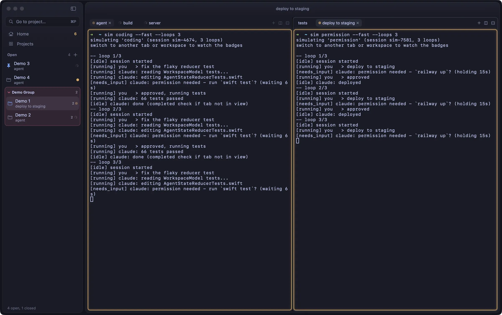

Simone Salerno
Lead AI Engineer in Yellow Tech · Milano
Porto l'AI generativa dentro aziende vere e la tengo in produzione. Per conto mio costruisco strumenti per sviluppatori, quasi tutti open source, e app mie. Progetto l'architettura, l'AI scrive il codice, io verifico e rilascio.
- programmo con
- Claude Code e Codex, con un solo contesto condiviso
- nei prodotti
- agenti su harness su misura, come quello di questo sito
- contatti
- hello@esse.dev
Da dove iniziare
- Agente› Come fa Portsage a sapere quali porte sono occupate? Mostrami il codice
- RelayTerminale nativo per macOS pensato per far girare tanti coding agent in parallelo, con lo stato di ogni agente letto dagli hook e non dall'output.
- 01MetodoArchitettura prima del codice, Il contesto è il lavoro, Misurare invece di fidarsi, Il mio setup
Simone SalernoLead AI Engineer in Yellow TechMilano
Porto l'AI generativa dentro aziende vere e la tengo in produzione.
Per conto mio costruisco strumenti per sviluppatori, quasi tutti open source, e app mie. Programmo con Claude Code e Codex su un solo contesto condiviso, e nei prodotti metto agenti su harness su misura, come quello di questo sito.
Da dove iniziare
Simone Salerno
Lead AI Engineer in Yellow Tech · Milano
Porto l'AI generativa dentro aziende vere e la tengo in produzione. Per conto mio costruisco strumenti per sviluppatori, quasi tutti open source, e app mie. Progetto l'architettura, l'AI scrive il codice, io verifico e rilascio.
~ $ whoami --facts programmo con Claude Code + Codex, un solo contesto condiviso nei prodotti agenti su harness su misura, come quello di questo sito contatti hello@esse.dev linkedin github instagram x ~ $
SimoneSalerno
Lead AI Engineer in Yellow Tech · Milano
~ $ whoami
simone salerno
Lead AI Engineer in Yellow Tech · Milano
›Simone Salerno
Simone SalernoLead AI Engineer in Yellow Tech · Milano
Porto l'AI generativa dentro aziende vere e la tengo in produzione.
~/simone-salerno
Simone Salerno
Lead AI Engineer in Yellow Tech · Milano
Porto l'AI generativa dentro aziende vere e la tengo in produzione. Per conto mio costruisco strumenti per sviluppatori , quasi tutti open source, e app mie. Progetto l'architettura, l'AI scrive il codice, io verifico e rilascio.
Da dove iniziare

- 01Architettura prima del codice
- 02Il contesto è il lavoro
- 03Misurare invece di fidarsi
- 04Il mio setup
Simone Salerno
Lead AI Engineer in Yellow Tech · Milano
Porto l'AI generativa dentro aziende vere e la tengo in produzione. Per conto mio costruisco strumenti per sviluppatori, quasi tutti open source, e app mie.
Da dove iniziare
Conosce i progetti, legge il codice dei repo e risponde con le fonti.
› Come fa Portsage a sapere quali porte…~ $ whoami
Simone Salerno
Lead AI Engineer in Yellow Tech · Milano
Porto l'AI generativa dentro aziende vere e la tengo in produzione. Per conto mio costruisco strumenti per sviluppatori RelayPortsagemcpbelt
pgbee, quasi tutti open source, e app mie. Progetto l'architettura, l'AI scrive il codice, io verifico e rilascio.
Da dove iniziare
Conosce i progetti, legge il codice dei repo e risponde con le fonti.
› Come lavora Simone con i coding agent?Simone SalernoLead AI Engineer in Yellow Tech · Milano
Porto l'AI generativa dentro aziende vere e la tengo in produzione.
Per conto mio costruisco strumenti per sviluppatori RelayPortsagemcpbelt
pgbee, quasi tutti open source, e app mie. Progetto l'architettura, l'AI scrive il codice, io verifico e rilascio.
- programmo con
- Claude Code e Codex, con un solo contesto condiviso
- nei prodotti
- agenti su harness su misura, come quello di questo sito
- contatti
- hello@esse.dev
Da dove iniziare
Una regola scritta in un prompt è una probabilità, la stessa regola in un hook è una garanzia.
02 · Il contesto è il lavoro- 01
- 02
- 03
- 04
Simone SalernoLead AI Engineer in Yellow Tech · Milano
Porto l'AI generativa dentro aziende vere e la tengo in produzione. Per conto mio costruisco strumenti per sviluppatori, quasi tutti open source, e app mie. Progetto l'architettura, l'AI scrive il codice, io verifico e rilascio.
- 01Hai una domanda?› Come fa Portsage a sapere quali porte sono occupate?
- 02Cosa costruisce?Relay, il terminale per tanti coding agent, e altri 22 progetti
- 03Come lavora?Quattro note di metodo: architettura, contesto, misure, setup